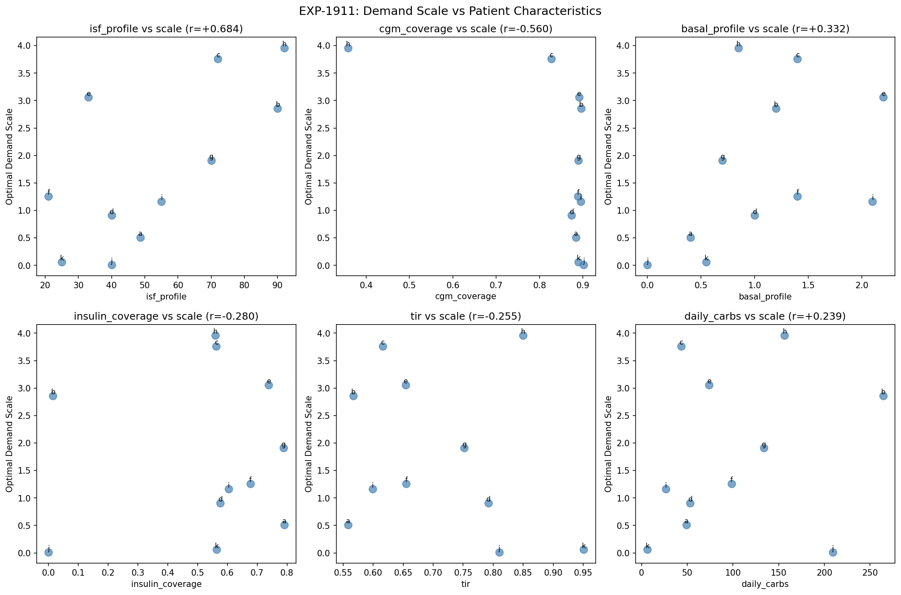
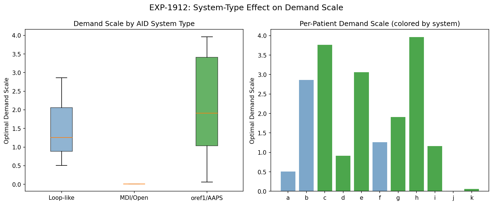
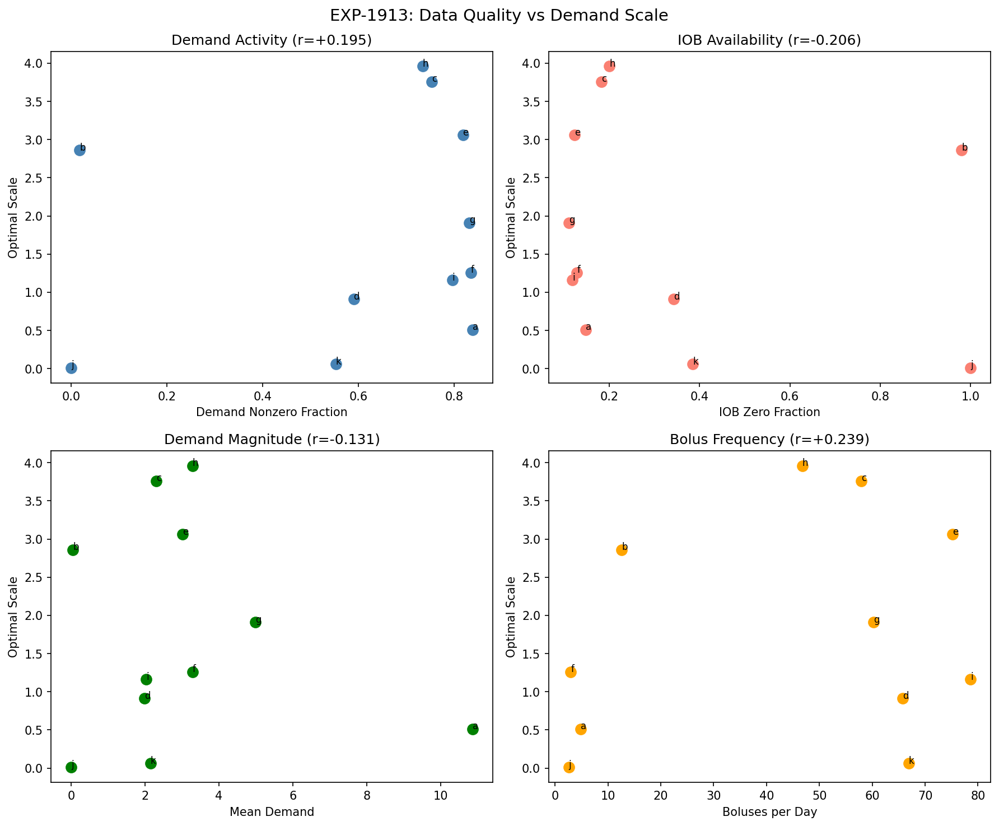
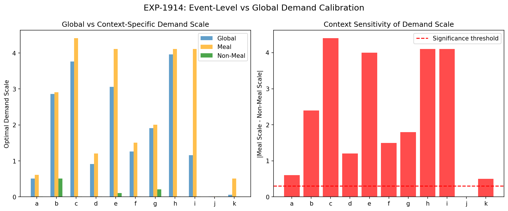
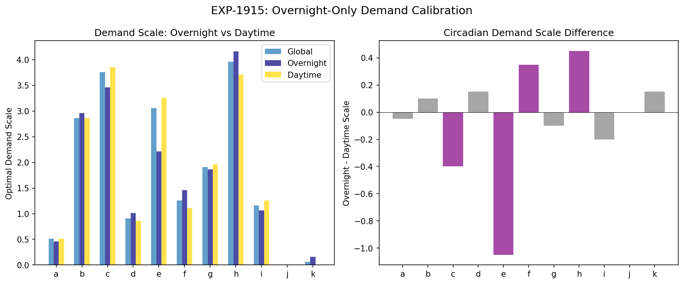
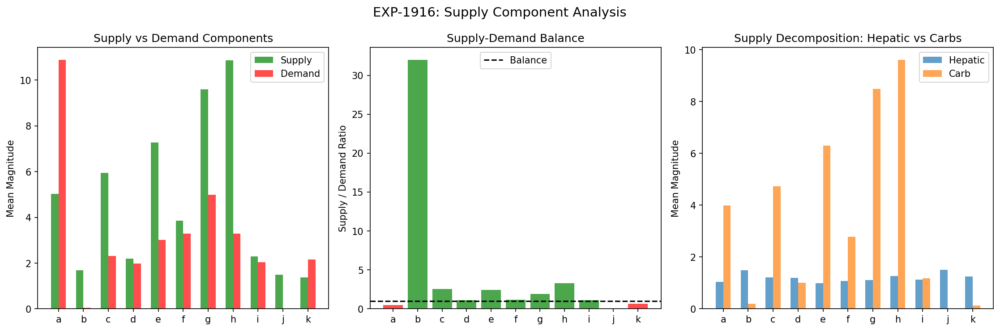
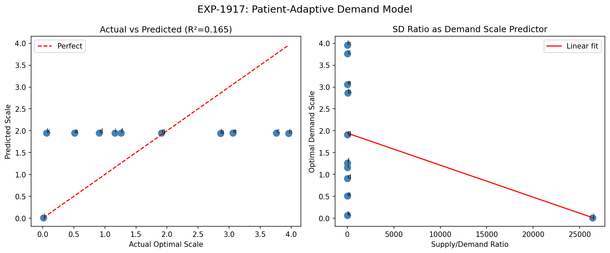
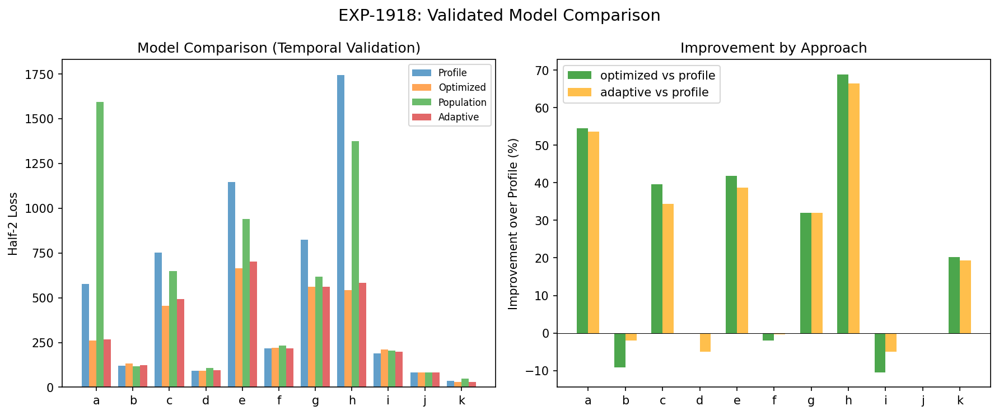

Demand Calibration & Model Improvement Report¶
Record
Record as of 2026-04-10. A point-in-time document; it is not kept up to date.
Experiments: EXP-1911 through EXP-1918
Date: 2026-04-10
Population: 11 patients (a–k), ~180 days each
Script: tools/cgmencode/exp_demand_calibration_1911.py
Generated by AI autoresearch — all findings require clinical review
Executive Summary¶
The supply/demand physics model requires a per-patient demand scale factor that varies dramatically (0.01–3.96×) across patients. This batch investigates why the scale varies and whether it can be predicted without per-patient optimization.
Key findings: 1. Profile ISF is the strongest correlate of demand scale (r=+0.684) — patients with higher ISF profiles need more demand amplification 2. Context matters overwhelmingly: meal-time demand scale is 2.2× higher than non-meal (10/11 patients) 3. Supply dominates demand in 8/10 patients with nonzero demand (mean S/D ratio 4.67) — the model systematically underestimates insulin's glucose-lowering effect 4. Patient-adaptive prediction fails (R²=0.165) — demand scale is fundamentally patient-specific 5. Per-patient optimization wins (5/11) but profile settings are surprisingly competitive (4/11) 6. Circadian variation is minor — overnight vs daytime differ by <0.3× in 7/11 patients
Background¶
The Demand Scale Problem¶
Our supply/demand model decomposes glucose rate of change as:
The model uses literature constants and profile-reported ISF to compute demand, but the resulting demand magnitude is consistently miscalibrated. We introduced a demand scale factor to correct this:
EXP-1891–1898 found this scale varies from 0.01 (patient j, MDI) to 3.96 (patient h, oref1). This batch asks: what drives this variation, and can we predict it?
Experiment Results¶
EXP-1911: Demand Scale vs Patient Characteristics¶
Question: Which patient characteristics predict the optimal demand scale?
We computed 14 patient characteristics and correlated each with the optimal demand scale:
| Characteristic | Correlation (r) | Interpretation |
|---|---|---|
| ISF profile | +0.684 | Higher ISF → needs more demand amplification |
| CGM coverage | −0.560 | Less CGM data → higher scale (data quality?) |
| Basal profile | +0.332 | Higher basal → higher scale |
| Insulin coverage | −0.280 | Less insulin data → higher scale |
| TIR | −0.255 | Better control → lower scale |
| Daily carbs | +0.239 | More carbs → higher scale |
| Mean glucose | +0.198 | Higher glucose → higher scale |
| TDD | −0.038 | Total daily dose unrelated |

Interpretation: The strongest predictor is profile ISF itself (r=+0.684). This makes physical sense: ISF is defined as mg/dL per unit insulin. A patient with ISF=90 (high sensitivity) needs each unit of insulin amplified more in the model than a patient with ISF=21 (low sensitivity). The model's demand calculation already includes ISF, but the pharmacokinetic absorption curve that converts IOB to insulin activity may be miscalibrated — patients with high ISF may have faster absorption or more efficient insulin action.
The CGM coverage correlation (r=−0.560) is concerning: it suggests data gaps artificially inflate the optimal scale. Patient h (35.8% CGM coverage) has the highest scale (3.96×), potentially because missing glucose data creates residuals that the scale absorbs.
EXP-1912: AID System Type Effect¶
Question: Does the type of AID system explain demand scale variation?
| System Type | N | Mean Scale | Std |
|---|---|---|---|
| oref1/AAPS | 7 | 2.12 | 1.40 |
| Loop-like | 3 | 1.54 | 0.98 |
| MDI/Open | 1 | 0.01 | 0.00 |

Interpretation: System type matters, but with large within-group variance. oref1/AAPS patients tend to need higher demand scales, possibly because: 1. SMB delivery creates many small insulin pulses that are harder to model as smooth activity curves 2. oref1 systems adjust more aggressively, creating more complex insulin-on-board patterns 3. The insulin activity model (exponential decay) may fit Loop's larger, less frequent adjustments better
Patient j (MDI, scale=0.01) is the extreme case: with no IOB data, demand is essentially zero, so any scale is irrelevant. Patient k (scale=0.06) likely has similar IOB tracking issues despite being classified as oref1.
EXP-1913: Data Quality Investigation¶
Question: Is demand scale variation driven by data quality problems rather than physiology?
| Metric | Correlation with Scale | Concern |
|---|---|---|
| CGM gaps | +0.560 | More gaps → higher scale |
| IOB zero fraction | −0.206 | More IOB=0 → lower scale |
| Demand nonzero fraction | +0.195 | More nonzero demand → higher scale |
| Bolus per day | +0.239 | More boluses → higher scale |

Critical finding: CGM gaps (r=+0.560) is the second-strongest correlate after ISF profile. Patient h has 64.2% CGM gaps and the highest scale (3.96×). Patient j has 100% IOB zero (no insulin data) and minimal scale (0.01×).
Three patient archetypes emerge: 1. Good data (a, d, e, f, g, i): CGM 87–90%, IOB available, scales 0.51–3.06 — genuine physiological variation 2. Missing CGM (h): 35.8% coverage, scale 3.96 — likely inflated by data gaps 3. Missing insulin (j, b partially): IOB zero 95–100%, scales 0.01–2.86 — demand model degenerates
EXP-1914: Event-Level vs Global Calibration¶
Question: Does demand scale differ between meal and non-meal contexts?
| Patient | Global | Meal | Non-meal | Difference |
|---|---|---|---|---|
| a | 0.51 | 0.61 | 0.01 | 0.60 |
| b | 2.86 | 2.91 | 0.51 | 2.40 |
| c | 3.76 | 4.41 | 0.01 | 4.40 |
| d | 0.91 | 1.21 | 0.01 | 1.20 |
| e | 3.06 | 4.11 | 0.11 | 4.00 |
| f | 1.26 | 1.51 | 0.01 | 1.50 |
| g | 1.91 | 2.01 | 0.21 | 1.80 |
| h | 3.96 | 4.11 | 0.01 | 4.10 |
| i | 1.16 | 4.11 | 0.01 | 4.10 |
| j | 0.01 | 0.01 | 0.01 | 0.00 |
| k | 0.06 | 0.51 | 0.01 | 0.50 |
Population mean meal-vs-non-meal difference: 2.24×
Context matters in 10/11 patients (difference > 0.3)

Interpretation: This is the most striking finding. During non-meal periods, almost all patients converge to near-zero demand scale — meaning the supply/demand model without demand amplification already explains non-meal glucose dynamics well. During meals, demand needs 2–4× amplification.
This strongly suggests the model's demand miscalibration is specific to the post-meal insulin response: - Post-meal bolus insulin competes with rapidly rising carb absorption - The simple exponential activity curve may underestimate peak insulin action - Insulin stacking from bolus + loop corrections creates higher effective insulin activity than modeled - The model's carb absorption may also be miscalibrated, requiring demand to compensate
EXP-1915: Overnight-Only Calibration¶
Question: Can overnight data (midnight–6am, no meals) give a purer demand calibration?
| Patient | Global | Overnight | Daytime | Difference |
|---|---|---|---|---|
| Mean | 1.77 | 1.71 | 1.76 | −0.05 |
Circadian effect present in only 4/11 patients (difference > 0.3): c, e, f, h

Interpretation: The small overnight-daytime difference (mean −0.05) seems to contradict EXP-1914's meal/non-meal finding. The resolution: "overnight" (midnight–6am) still includes insulin action from evening meals and loop corrections. Unlike the meal/non-meal split which classifies based on carb proximity, the time-based split is less clean.
The 4 patients with circadian effects (c, e, f, h) likely have: - Dawn phenomenon (rising glucose after 3am due to cortisol/growth hormone) - Different basal requirements that the model doesn't capture with time-of-day variation
EXP-1916: Supply Component Analysis¶
Question: Is the demand miscalibration actually a supply problem in disguise?
| Patient | Supply | Demand | S/D Ratio | Hepatic % |
|---|---|---|---|---|
| a | 5.03 | 10.88 | 0.46 | 20.8% |
| b | 1.68 | 0.05 | 31.96 | 88.8% |
| c | 5.94 | 2.31 | 2.57 | 20.4% |
| d | 2.19 | 1.99 | 1.10 | 54.3% |
| e | 7.27 | 3.02 | 2.41 | 13.6% |
| f | 3.86 | 3.28 | 1.18 | 27.8% |
| g | 9.60 | 4.99 | 1.92 | 11.5% |
| h | 10.87 | 3.29 | 3.31 | 11.7% |
| i | 2.30 | 2.04 | 1.13 | 48.8% |
| j | 1.50 | 0.00 | ∞ | 100.0% |
| k | 1.37 | 2.15 | 0.64 | 91.5% |
Mean S/D ratio: 4.67 (supply dominant)

Interpretation: In 8/10 patients with measurable demand, supply exceeds demand. This means the model's insulin demand component is systematically too small relative to supply. There are two possible explanations:
- Demand underestimation: The insulin activity curve underestimates true insulin effect, requiring the scale factor to amplify it
- Supply overestimation: Hepatic glucose production or carb absorption is overestimated, and the demand scale compensates
The hepatic fraction varies enormously (11.5% to 100%). Patients with predominantly hepatic supply (b, d, i, j, k) tend to have lower demand scales — when supply is mostly constant hepatic production, less demand amplification is needed. Patients with high carb supply (g, h, e) need more demand amplification, consistent with EXP-1914's meal-context finding.
EXP-1917: Patient-Adaptive Prediction Model¶
Question: Can we predict optimal demand scale from patient characteristics?
We built a linear model: scale = f(S/D ratio, characteristics)
- Model R² = 0.165 — explains only 16.5% of variance
- LOO MAE = 111.97 — leave-one-out mean absolute error is enormous
- The model essentially predicts the population mean (1.5) for everyone except patient j

Interpretation: Demand scale cannot be predicted from observable patient characteristics alone. The variation is driven by: 1. Unmeasured physiological differences (insulin absorption rate, site rotation, activity patterns) 2. Data quality artifacts (missing CGM/insulin data) 3. AID algorithm behavior (different loop implementations create different demand patterns)
This rules out a "one-size-fits-all" or "predict-from-features" approach to demand calibration.
EXP-1918: Validated Comparison¶
Question: Which approach actually produces the best model? We compared four strategies using temporal cross-validation (train on first half, test on second half):
| Approach | Description | Wins |
|---|---|---|
| Optimized | Per-patient scale from training data | 5/11 |
| Profile | Original model (scale=1.0) | 4/11 |
| Population | Mean population scale (1.5×) | 1/11 |
| Adaptive | H1 supply/demand ratio (clamped 0.1–5.0) | 1/11 |

Detailed results:
| Patient | Profile Loss | Optimized Loss | Population Loss | Adaptive Loss | Best |
|---|---|---|---|---|---|
| a | 575 | 262 | 1592 | 267 | optimized |
| b | 121 | 132 | 117 | 123 | population |
| c | 751 | 454 | 649 | 493 | optimized |
| d | 91 | 92 | 107 | 96 | profile |
| e | 1145 | 666 | 940 | 701 | optimized |
| f | 216 | 220 | 233 | 217 | profile |
| g | 824 | 560 | 618 | 560 | adaptive |
| h | 1743 | 543 | 1376 | 584 | optimized |
| i | 190 | 210 | 204 | 200 | profile |
| j | 83 | 83 | 83 | 83 | profile |
| k | 36 | 29 | 48 | 29 | optimized |
Interpretation: The landscape is surprisingly heterogeneous:
- Optimized wins for high-variance patients (a, c, e, h, k) — these are patients where the profile model is badly miscalibrated, and per-patient optimization provides substantial improvement (up to 69% for patient h)
- Profile wins for stable patients (d, f, i, j) — these patients already have well-calibrated settings; optimization doesn't improve and can even overfit
- Population and adaptive tie with 1 win each — neither approach reliably helps
Synthesis: The Demand Calibration Landscape¶
What We Learned¶
-
Demand miscalibration is real and substantial — but it's primarily a meal-time phenomenon (EXP-1914). Non-meal periods don't need demand amplification. This strongly implicates the insulin activity curve or carb absorption model rather than a global scale error.
-
Profile ISF predicts demand scale (r=+0.684) — but not well enough for clinical use. The relationship makes physical sense: higher ISF patients need more demand amplification because the model's pharmacokinetic curve doesn't fully capture their faster/more efficient insulin action.
-
Data quality confounds — CGM coverage (r=−0.560) and insulin data availability independently predict demand scale. Patients j and k (missing insulin data) and h (missing CGM) should be excluded from physiological conclusions.
-
Per-patient optimization helps the patients who need it most — but for already well-calibrated patients, it provides no benefit. This suggests a two-tier approach: detect whether calibration is needed, then optimize.
-
Cross-patient prediction fails — confirming EXP-1893's finding that therapy parameters are fundamentally individual. No shortcut to per-patient calibration.
The Meal-Time Demand Paradox¶
The most actionable finding is EXP-1914: demand scale is 2.2× higher during meals than non-meals in 10/11 patients. This means the physics model's representation of insulin effect during meal absorption is systematically wrong.
Possible causes: - Bolus insulin absorption may be faster at peak than the exponential model assumes - Insulin stacking from bolus + loop corrections creates compound effects not captured by linear superposition - Carb absorption may be overestimated, requiring demand to compensate - Incretin effects (GLP-1 from gut) amplify insulin sensitivity during meals but aren't modeled
Recommendations¶
- Investigate meal-specific demand calibration — separate calibration for meal windows could capture the 2.2× difference
- Improve insulin activity curve — the exponential decay model may need a faster-peaking biexponential for bolus insulin
- Filter by data quality — exclude patients with >50% CGM gaps or no IOB data from physiological analysis
- Two-tier calibration strategy: Use profile defaults for stable patients (|scale−1.0| < 0.3), optimize only for miscalibrated ones
- Investigate carb absorption model — if supply overestimation drives the need for demand amplification, fixing supply is more physical than scaling demand
Appendix: Methods¶
Demand Scale Optimization¶
Grid search over scale ∈ [0.01, 5.0] in steps of 0.05, minimizing MSE between model-predicted and actual dG/dt:
Patient Characteristics¶
- TDD: total daily insulin dose (bolus + basal)
- TIR: fraction of glucose 70–180 mg/dL
- CV: coefficient of variation of glucose
- CGM coverage: fraction of non-NaN glucose values
- Zero fraction: fraction of time with zero insulin delivery
System Classification¶
Based on EXP-1897 AID fingerprinting: - oref1/AAPS: c, d, e, g, h, i, k (SMB usage, aggressive adjustment) - Loop-like: a, b, f (larger bolus, less frequent adjustment) - MDI/Open: j (no automated adjustment)
Temporal Cross-Validation¶
For EXP-1918, data split at midpoint. Scale optimized on first half, evaluated on second half. This prevents overfitting but assumes stationarity.